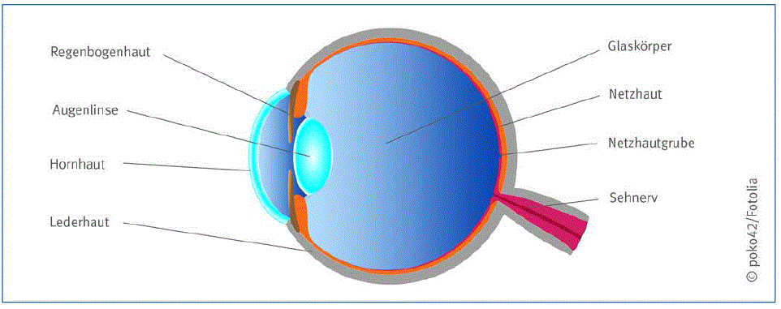
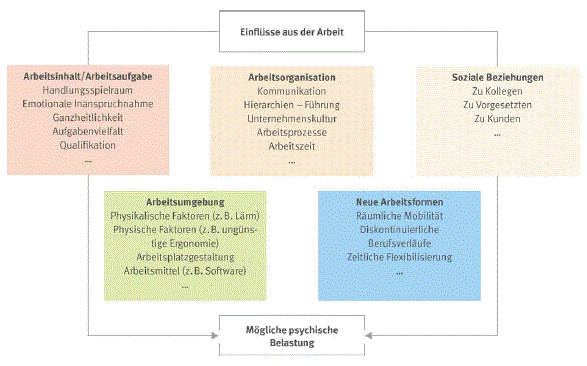
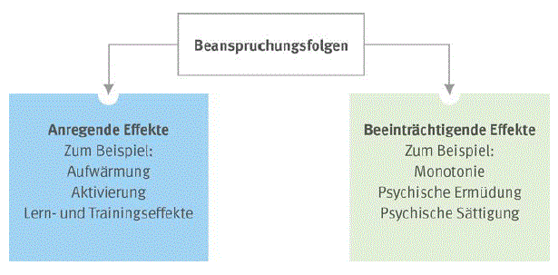
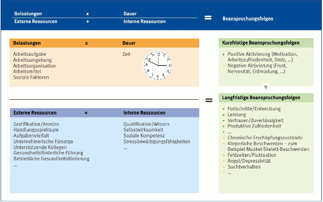

Bei der Arbeit an Bildschirm- und Büroarbeitsplätzen können durch erhöhte körperliche, visuelle und psychische Belastungen gesundheitliche Gefährdungen auftreten. Zwischen den Belastungen bestehen vielfältige Wechselwirkungen.
Grundsätzlich werden Bildschirmarbeitsplätze als belastungsarme Arbeitsplätze eingestuft, wenngleich durch Bewegungsmangel oder Vorschädigungen Beschwerden im Bereich des Bewegungsapparates ausgelöst oder verschlimmert werden können. Chronische Erkrankungen des knöchernen und muskulären Anteils des Rückens bei Beschäftigten an Bildschirmarbeitsplätzen spielen jedoch im Hinblick auf das Berufskrankheitengeschehen keine Rolle. Berufskrankheiten sind in diesem Zusammenhang nicht bekannt.
Die körperliche Belastung am Bildschirmarbeitsplatz betrifft in erster Linie den Bewegungsapparat. Sie wird durch folgende Faktoren begünstigt:
Betroffen sind besonders der Schulter-Arm-Bereich, die Halswirbelsäule und die Lendenwirbelsäule. Da der Bewegungsapparat eine lokale Belastung durch eine Reihe von Ausgleichsmaßnahmen kompensiert, können Beschwerden auch in anderen Körperregionen auftreten als dort, wo die Belastung einwirkt. Deshalb ist bei der Beurteilung der Beanspruchung eines Beschäftigten durch körperliche Belastung grundsätzlich der ganze Bewegungsapparat zu betrachten.
Eine Ursache für das Auftreten von Beschwerden sind Trainings- und Bewegungsmangel der Beschäftigten mit einer verminderten Ausprägung der Muskulatur im Bereich des Halte- und Bewegungsapparates. Das Ungleichgewicht zwischen der körperlichen Belastung und dem muskulären Trainingszustand äußert sich meist in muskulären Verspannungen und Schmerzen.
Umfangreiche Untersuchungen haben gezeigt, dass sitzende Tätigkeiten grundsätzlich nicht häufiger mit Rückenbeschwerden im Bereich der Lendenwirbelsäule verbunden sind als andere Tätigkeiten. Rückenbeschwerden sind also nicht spezifisch für Bildschirmarbeitsplätze, sondern kommen in allen Berufsgruppen vor. Am Bildschirmarbeitsplatz sind nachgewiesene Risikofaktoren für das Auftreten solcher Beschwerden psychische Belastung, fehlende Arbeitszufriedenheit, monotone Arbeitsinhalte, Mängel in der ergonomischen Gestaltung sowie außerberufliche Faktoren. Grundsätzlich ist es empfehlenswert, ein Bewegungstraining durchzuführen, dessen Hauptziel es ist, die durch Bewegungsmangel entstandenen Trainingsdefizite auszugleichen. Muskuläre Dysbalancen können auf diese Weise beseitigt werden, was zu einer Beschwerdereduktion und Belastungsoptimierung bei den Beschäftigten beitragen kann. Eine Reihe von Untersuchungen von bereits erfolgreich etablierten Trainingskonzepten konnte die positiven Effekte auf die Beschäftigten an Bildschirmarbeitsplätzen nachweisen.
Zur Prävention von Beschwerden und Erkrankungen des Bewegungsapparates durch einseitige körperliche Arbeitsbelastungen sollte versucht werden, die Arbeitsabläufe abwechslungsreich im Sinne einer Mischarbeit zu gestalten, um auch einer weiter zunehmenden Bewegungsarmut am Arbeitsplatz entgegenzuwirken.
Die Tätigkeit am Bildschirmarbeitsplatz stellt besondere Anforderungen an die Sehschärfe, die Ausrichtung und Koordination der Sehachsen und damit an das beidäugige Sehen. Die Zeichenerkennung erfordert bereits bei der Textverarbeitung eine präzise Abbildung der Zeichen durch die brechenden Medien des Auges (Hornhaut, Linse, Glaskörper) und eine regelrechte Weiterverarbeitung der optischen Informationen in der Sehbahn des zentralen Nervensystems (Netzhaut, Sehnerv, Sehhirn) – siehe Abbildung 3. Schon bei der alltäglichen Büroarbeit werden hohe Anforderungen an das Sehvermögen der Beschäftigten gestellt.
Unabhängig von der Tätigkeit sind Abweichungen von Normalbefunden bei Augen und Sehvermögen häufig zu beobachten. So sind geringe Abweichungen der Sehachse bei nahezu allen Personen festzustellen. Sie werden aber in den meisten Fällen von Ausgleichsmechanismen der Augen und des Gehirns kompensiert. Deshalb sind dem individuellen Sehvermögen und der Arbeitsaufgabe angepasste Sehhilfen für die ausreichende Korrektur von Sehfehlern am Bildschirmarbeitsplatz von entscheidender Bedeutung.
 |
Abb. 3 Schnittbild des Auges
Eine vermehrte Beanspruchung der Augen und des Sehvermögens kann zum Beispiel auftreten durch:
Begünstigt wird das Auftreten von Beschwerden durch das Vorliegen von Augenerkrankungen. Hierzu zählen unter anderem Eintrübung der Augenlinse (Katarakt), deutliche Fehlstellungen der Augenachsen (Schielfehler) und Veränderungen oder Erkrankungen der Netzhaut – zum Beispiel bei Zuckerkrankheit oder Bluthochdruck.
Beschwerden bei Beschäftigten äußern sich meist unspezifisch – zum Beispiel durch Kopfschmerzen, brennende und tränende Augen sowie Flimmern vor den Augen. Besonders zu beachten ist weiterhin, dass ein unzureichendes Sehvermögen durch Ausgleichshaltungen auch zu Beschwerden am Bewegungsapparat führen kann.
Da an Bildschirmarbeitsplätzen verschiedene Arbeitsbereiche in unterschiedlichen Sehentfernungen visuell erfasst werden müssen, nimmt das Akkommodationsvermögen der Augen eine besondere Rolle ein. Unter Akkommodation wird die Fähigkeit des Auges verstanden, Gegenstände in unterschiedlicher Entfernung durch eine Veränderung der Brechkraft der Augenlinse scharf auf der Netzhaut abzubilden. Da diese Eigenschaft mit dem Alter abnimmt, ist die Beanspruchung der Augen bei älteren Beschäftigten oft höher als bei jüngeren Beschäftigten.
Nach einhelliger Meinung von Fachleuten sind bei Erwachsenen Schädigungen des Sehorgans durch Bildschirmarbeit nicht zu erwarten. Die häufig geäußerte Befürchtung, man könne sich durch Überanstrengung die Augen verderben, entbehrt jeder wissenschaftlichen Grundlage. Auch lang andauernde Akkommodationsleistungen verursachen erfahrungsgemäß keine wesentlichen Beschwerden.
Die angemessene, arbeitsplatzbezogene Untersuchung der Augen und des Sehvermögens im Rahmen einer arbeitsmedizinischen Vorsorge nach der Arbeitsmedizinischen Regel AMR 14.1 "Angemessene Untersuchung der Augen und des Sehvermögens" und die gegebenenfalls hieraus resultierenden Maßnahmen haben deshalb für Beschäftigte an Bildschirmarbeitsplätzen eine besondere Bedeutung (siehe Abschnitt 7).
Zum besseren Verständnis der psychischen Belastung sind einheitliche Begriffsklärungen von psychischer Belastung und Beanspruchung erforderlich. Diese wurden in der DIN EN ISO 10075-1 vorgenommen. Hiernach wird psychische Belastung definiert als "die Gesamtheit aller erfassbaren Einflüsse, die von außen auf den Menschen zukommen und psychisch auf ihn einwirken".
Einfach erklärt, wirken auf den Beschäftigten Einflüsse aus der Arbeit ein, die dem Arbeitsinhalt/der Arbeitsaufgabe, der Arbeitsumgebung, der Arbeitsorganisation, den Arbeitsmitteln, den sozialen Beziehungen oder auch neuen Arbeitsformen entspringen können (Abbildung 4).
Zwei Dinge werden aus Abbildung 4 deutlich. Zum einen die Abhängigkeiten der fünf Faktoren untereinander, das heißt auch Einwirkungen, wie Lärm oder Klima, wirken nicht nur als physische, sondern auch als psychische Belastung. Zum anderen wird erkennbar, dass psychische Belastung nicht im Sinne negativer Einflüsse interpretiert werden darf. Psychische Belastung ist als Einflussgröße auf den Menschen neutral zu sehen.
Psychische Belastung kann sowohl zu positiven (Lern- oder Trainingseffekte, Aktivierung) als auch negativen Beanspruchungsfolgen (Monotonie, psychische Sättigung, psychische Ermüdung und Stress) führen (Abbildung 5).
Ein und dieselbe Belastung kann bei verschiedenen Personen zu unterschiedlicher Beanspruchung führen. Ob aus einer Belastung beeinträchtigende oder anregende Effekte resultieren, hängt auch von den Ressourcen ab, die einer Person zur Verfügung stehen. In diesem Zusammenhang ist das "erweiterte Belastungs- und Beanspruchungsmodell" zu verstehen.
Zu Zusammenhängen von psychischer Belastung und Beanspruchungsfolgen liegen umfassende arbeitswissenschaftliche Erkenntnisse vor.
 |
Abb. 4 Einflüsse aus der Arbeit auf den Menschen und mögliche psychische Belastung
 |
Abb. 5 Beanspruchungsfolgen
Es lassen sich interne und externe Ressourcen unterscheiden, deren Wirkung auf Gesundheit und Leistungsfähigkeit wissenschaftlich belegt ist. Zu den internen Ressourcen zählen zum Beispiel neben fachlichen Kompetenzen auch Motivation, Selbstwirksamkeitserwartung (= Vertrauen in die eigenen Fähigkeiten) und Bewältigungsstrategien. Zusätzlich beeinflussen personenspezifische Faktoren wie Alter, Geschlecht, die generelle körperliche und psychische Verfassung sowie Persönlichkeit und soziale Lebensbedingungen das Auftreten psychischer Beanspruchungsfolgen. Zu den externen Ressourcen zählen die betrieblichen Rahmenbedingungen – zum Beispiel die soziale Unterstützung durch Kollegen und Vorgesetzte oder Aspekte der Arbeitsorganisation wie z. B. der zur Verfügung stehende Handlungs- und Entscheidungsspielraum.
Die psychische Belastung wird optimiert durch eine ergonomische Gestaltung von Arbeitsbedingungen (siehe Abbildung 4: Arbeitsaufgabe, -organisation, -mittel, -umgebung).
Das folgende Modell (Abbildung 6) bietet eine geeignete Grundlage zur Ableitung geeigneter Strategien für eine gesunde und erfolgreiche Arbeitsgestaltung.

Abb. 6 Handlungsmodell zur gesunden und erfolgreichen Arbeitsgestaltung
Zur Veranschaulichung der Gleichung sollen die beiden folgenden Szenarien dienen:
Szenario 1: Eine Tätigkeit mit hohem Handlungsspielraum (externe Ressource) und hoher Verantwortung (Belastung) wird über einen langen Projektzeitraum (Dauer) durchgeführt. Dabei entspricht die Tätigkeit den beruflichen Qualifikationen des Beschäftigten sowie seinen individuellen Wünschen. Der Beschäftigte zeichnet sich außerdem durch eine hohe Stressbewältigungskompetenz aus (interne Ressourcen). Darüber hinaus achtet das Unternehmen darauf, dass die Beschäftigten für gute Leistungen entsprechend belohnt werden und dass arbeitsbedingten Belastungen auch entsprechende Erholzeiten gegenüberstehen. Auch bestehen für die Beschäftigten persönliche Freiräume, eigene Ideen in die Arbeit einzubringen. Das Teamklima im Unternehmen ist vorbildlich (externe Ressourcen).
Fazit: Obwohl die Dauer und die Intensität der psychischen Belastung hier sehr hoch ist, wird sie durch hohe interne und externe Ressourcen abgepuffert. Hier sind keine beziehungsweise kaum negative Beanspruchungsfolgen zu erwarten.
Szenario 2: Eine Aufgabe verlangt von den Beschäftigten seit Monaten sich ständig wiederholende, stark segmentierte Tätigkeiten – zum Beispiel das ausschließliche Scannen von Belegen oder Ähnliches (Belastung). Diese Tätigkeit wird durch andere Tätigkeiten nicht unterbrochen, angereichert oder erweitert (fehlende externe Ressource). Die Person ist hinsichtlich der durchzuführenden Arbeit deutlich überqualifiziert und damit unterfordert (Beanspruchung) und das Unternehmen besitzt weder Möglichkeiten der Mischarbeit noch Empfehlungen zu Bildschirmarbeitsunterbrechungen. Auch Mitarbeitergespräche wurden schon seit Jahren nicht mehr geführt (fehlende externe Ressourcen). Durch häufigen Wechsel in der Belegschaft besteht kein guter Zusammenhalt im Kollegenkreis (fehlende externe Ressource).
Fazit: Hier ist die Wahrscheinlichkeit sehr hoch, dass negative Beanspruchungsfolgen auftreten – zum Beispiel in Form von Monotonie und Ermüdung. Es gibt wenig/keine Ressourcen, die die Belastungen abpuffern könnten.
Diese Szenarien veranschaulichen beispielhaft die entscheidenden Einflussfaktoren auf die positiven beziehungsweise negativen Beanspruchungsfolgen. Für eine gesunde und erfolgreiche Arbeitsgestaltung ist es erforderlich, die für die jeweilige Situation bedeutsamen "Stellschrauben" zu identifizieren und zu betätigen. Dabei sollte der Fokus sowohl auf der Anpassung der Belastung als auch auf der Stärkung von Ressourcen liegen. Bei einem systematischen Vorgehen, mit dem Ziel Gesundheit und Sicherheit in die Wertschöpfungsprozesse eines Unternehmens zu implementieren, spricht man von betrieblicher Präventionskultur. Darüber hinaus muss zudem die Förderung der individuellen Gesundheitskompetenz der Person berücksichtigt werden. Denn ohne die Beteiligung und Einbindung der Beschäftigten können gesundheitsförderliche Maßnahmen nicht ihre Wirkung entfalten. Die Förderung der Gesundheitskompetenz hat das Ziel, den einzelnen Beschäftigten in seinen Fähigkeiten so zu stärken, dass er seine Gesundheit und Beschäftigungsfähigkeit erhalten kann. Letztendlich greifen Präventionskultur und Gesundheitskompetenz also ineinander und bilden eine ganzheitliche Präventionsstrategie.
Weitere Literatur
|